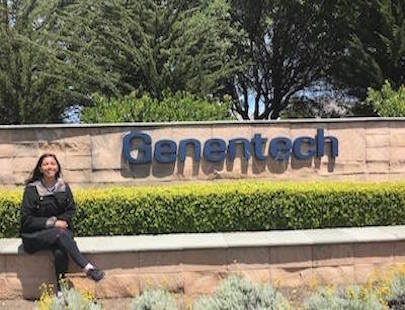

2018 Genentech Interns
Celebrating the last day at a fantastic company

Institute for Regenerative Engineering
Examining polymer scaffolds under a light microscope

39th annual CT Academy of Science and Engineering Meeting and Dinner
Presenting during cocktail hour
Acadia National Park
Exploring Acadia National Park while in Bar Harbor, Maine to present at The Jackson Laboratory headquarters

2015 Women of Innovation Awards Ceremony
Accepting the CT Technology Council's Women of Innovation Award in the Youth Innovation and Leardership Category